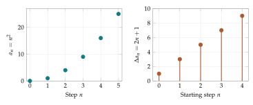

Imagine recording the number of messages arriving at a help desk each day. The daily counts tell one story: when demand is high, when it is growing, and when it begins to slow. The running total tells another: how much work has accumulated. Passing between these two descriptions means subtracting consecutive totals or adding consecutive arrivals. These are the two basic operations of discrete calculus.
The word discrete tells us that we are working with separate steps: days, generations, observations, or rounds of an algorithm. We will begin with quantities measured at these steps. Later the quantities will be probabilities, and the questions will concern learning, uncertainty, and information. The same subtraction-and-addition relationship will run through the entire course.
Reading a sequence as a record of change
A sequence is an ordered list of values. We write it as \(a_0,a_1,a_2,\ldots\), where the subscript records the step. The symbol \(a_3\) means the value at step three; it does not mean \(a\) multiplied by three. Starting with subscript zero lets us distinguish an initial measurement from measurements made after one or more updates.
A formula such as \(a_n=n^2\) gives each value directly. Substituting \(n=0,1,2,3,4\) gives \(0,1,4,9,16\). Another way to specify a sequence is to give an initial value and an update rule. For example, \[a_0=10,\qquad a_{n+1}=a_n+3\] means: start at ten, then add three each step. The resulting list is \(10,13,16,19,\ldots\). The formula \(a_n=10+3n\) describes the same list.
Before interpreting a sequence, give its terms and its steps units. If \(a_n\) is the number of messages received by the end of day \(n\), then \(a_{n+1}-a_n\) counts messages arriving during the next day. If measurements are two hours apart, dividing the change by two gives a rate per hour. Throughout most of this course, one update is our time unit. A finite change and a rate per physical unit agree numerically only when that unit has been specified appropriately.
The first difference measures one step
The forward difference of a sequence is \[\boxed{\Delta a_n=a_{n+1}-a_n.}\] Read the symbol \(\Delta\) as “change in.” The subscript \(n\) identifies the step that starts at \(n\) and ends at \(n+1\). A positive difference means an increase, a negative difference means a decrease, and a zero difference means no change during that step.
Example. Separating a total from its increments
Suppose cumulative arrivals at a help desk are \(a_0=0\), \(a_1=2\), \(a_2=7\), \(a_3=15\), and \(a_4=26\). Subtract consecutive entries: \[\Delta a_0=2,\quad\Delta a_1=5,\quad\Delta a_2=8,\quad\Delta a_3=11.\] There are five totals and four intervals between them. The differences count the arrivals during those four intervals. The total rises throughout, and its increments are also rising.
This operation plays the role of a derivative. It asks how the value changes as the input advances one step. Everything needed to compute it is present in two neighboring entries. A finite table can therefore support a useful calculus even when no formula between the observations is available.
Differences obey simple algebraic rules. For sequences \(a_n,b_n\) and a fixed number \(c\), \[\Delta(a_n+b_n)=\Delta a_n+\Delta b_n,\qquad \Delta(ca_n)=c\Delta a_n.\] For example, the first identity follows by expanding \((a_{n+1}+b_{n+1})-(a_n+b_n)\) and regrouping. Such identities let us analyze a complicated record by separating its parts.
Differences themselves can change
If \(a_n=n^2\), then \[\Delta a_n=(n+1)^2-n^2=(n^2+2n+1)-n^2=2n+1.\] The square sequence has first differences \(1,3,5,7,\ldots\). They increase by two each time. Applying the difference operation again gives the second difference: \[\Delta^2a_n=\Delta a_{n+1}-\Delta a_n =a_{n+2}-2a_{n+1}+a_n.\] For the square sequence, every second difference is two.
| Step \(n\) | \(a_n=n^2\) | \(\Delta a_n\) | \(\Delta^2a_n\) |
|---|---|---|---|
| 0 | 0 | 1 | 2 |
| 1 | 1 | 3 | 2 |
| 2 | 4 | 5 | 2 |
| 3 | 9 | 7 | |
| 4 | 16 |
The blank entries cannot be obtained from this five-term table because they need values beyond its end. The formula supplies those additional values if we want them.
A positive second difference says the first differences are increasing. It does not, by itself, say the original values are increasing. A falling sequence can have negative increments that become less negative. For instance, the values \(9,4,1,0\) have differences \(-5,-3,-1\) and second differences \(2,2\). The quantity falls, but its fall slows.
This distinction will matter when we study entropy. The sign of its first difference will tell us whether uncertainty rises or falls; its second difference will tell us how that tendency changes across neighboring states.
Example. A triangular accumulation
Suppose a workshop completes one item in its first interval, two in its second, three in its third, and so on. Let \(T_n\) be the number completed after \(n\) intervals. Then \[T_0=0,\qquad \Delta T_n=n+1.\] The initial values are \(0,1,3,6,10\). Pairing the terms of \(1+2+\cdots+n\) in forward and reverse order gives \(n\) pairs, each with sum \(n+1\). Therefore \[T_n=\frac{n(n+1)}2.\] Check the formula by subtracting neighboring values: \[\frac{(n+1)(n+2)}2-\frac{n(n+1)}2=n+1.\] The cumulative sequence is quadratic because its first differences increase linearly. Its second differences are one.
This gives a way to move in both directions between patterns. Constant first differences suggest an affine formula \(an+b\). Constant second differences suggest a quadratic formula. The suggestion becomes a proof after substitution verifies the formula and its starting value. A short table alone does not determine all future terms: many rules can agree on its entries and disagree later.
A table also makes clear what information a difference requires. Measurements at steps zero through four provide four changes. We cannot calculate the change starting at four until the fifth-step measurement arrives. A formula can supply information beyond the observed table, but that information comes from the formula’s assumptions.
For measured data, subtraction can mix several effects. If yesterday’s reading was too high and today’s is too low, their difference exaggerates an apparent fall. The operation is exact arithmetic; its interpretation depends on measurement quality. A deterministic sequence lets us study the operation before adding measurement error.

Summation reconstructs accumulated change
Return to the arrivals \(2,5,8,11\). Starting from zero and adding them gives the cumulative values \(0,2,7,15,26\). Summation reverses the difference operation once an initial value is supplied.
The notation \[\sum_{k=0}^{n-1}b_k\] means “add the terms \(b_k\) as \(k\) takes the integer values from zero through \(n-1\).” For example, \(\sum_{k=0}^3 b_k=b_0+b_1+b_2+b_3\). The letter \(k\) is a running index; we use a different letter from the endpoint \(n\) to keep their roles distinct.
Define the running sum by \(S_0=0\) and \[S_n=\sum_{k=0}^{n-1}b_k.\] Then \(S_{n+1}\) contains all the terms in \(S_n\) plus one new term, \(b_n\). Thus \[\Delta S_n=S_{n+1}-S_n=b_n.\] A sequence whose difference is \(b_n\) is called an antidifference of \(b_n\). Adding a constant to an antidifference gives another one. Specifying the starting value removes that ambiguity.
Example. An antidifference found by inspection
We already know that \(\Delta(n^2)=2n+1\). Therefore \(n^2\) is an antidifference of \(2n+1\). Starting at \(a_0=7\) instead of zero gives \(a_n=7+n^2\). The increments remain \(2n+1\) because the constant seven cancels in every subtraction.
Why the discrete fundamental theorem works
Write out three successive differences: \[\begin{aligned} \Delta a_m+\Delta a_{m+1}+\Delta a_{m+2} &=(a_{m+1}-a_m)+(a_{m+2}-a_{m+1})\\ &\quad +(a_{m+3}-a_{m+2})\\ &=a_{m+3}-a_m. \end{aligned}\] Every intermediate value is added once and subtracted once. This cancellation is called telescoping. The same argument works for any number of steps and gives the discrete fundamental theorem of calculus: \[\boxed{\sum_{k=m}^{n-1}\Delta a_k=a_n-a_m.}\] There are \(n-m\) changes between steps \(m\) and \(n\). The last change starts at \(n-1\), which explains the upper summation limit.
This identity is useful even when the changes alternate in sign. A sequence \(5,8,6,10\) has differences \(3,-2,4\). Their sum is five, exactly the endpoint change \(10-5\). Adding the absolute changes would instead give nine, a measure of total movement. Net change and total movement answer different questions. We will encounter the same distinction for paths through probability space.
Example. A balance equation for a stockroom
Let \(S_n\) be stock at the beginning of a day, \(R_n\) the deliveries received during that day, and \(D_n\) the items used. Assuming no other additions or losses, \[\Delta S_n=R_n-D_n.\] Take \(S_0=20\), deliveries \((5,0,8)\), and use \((3,6,4)\) over three days. Net changes are \((2,-6,4)\), giving stock levels \(20,22,16,20\). Summing the balance equations yields \[S_3-S_0=(5+0+8)-(3+6+4)=0.\] Final and initial stocks agree, although activity occurred throughout. Summing deliveries alone would describe throughput rather than the change in stored quantity.
This balance structure will reappear when probability moves through a network. A vertex’s stored mass changes by arrivals minus departures. The form of that law is already visible in a stockroom calculation.
Repeated multiplication gives a different kind of growth
A fixed addition gives constant first differences. A fixed multiplication gives a geometric sequence: \[a_{n+1}=r a_n,\qquad a_n=a_0r^n.\] To see the formula, compute \(a_1=ra_0\), then \(a_2=r(ra_0)=r^2a_0\), and continue. Here \(r\) is the multiplier per step. Growth of twenty percent corresponds to \(r=1.2\); a decrease of twenty percent corresponds to \(r=0.8\).
Its first difference is \[\Delta a_n=(r-1)a_n.\] The absolute increment depends on the current amount. Ten percent of a larger amount is a larger increment, even though the percentage rate is unchanged.
In a population model, a multiplier may produce noninteger counts. We then interpret counts as amounts or expected counts. A rule for a literal finite population would also need a sampling or rounding procedure. Chapter 4 develops the sampling interpretation.
There are two separate uses of the word discrete here. The time index may be discrete while the state takes arbitrary real values, as in \(a_{n+1}=1.2a_n\). Alternatively, the permitted states may form a finite list, as when a fixed number of tokens is allocated among categories. Both will occur in this course. A finite number of category labels does not force every probability to be an integer fraction with a fixed denominator.
Composition changes differently from total size
Suppose two types have counts \(A_n\) and \(B_n\). Their proportions are \[x_n=\frac{A_n}{A_n+B_n},\qquad 1-x_n=\frac{B_n}{A_n+B_n}.\] Dividing by the total is called normalization. It removes overall size and retains composition. Counts \((20,80)\) and \((200,800)\) both give \(x=1/5\).
Let each type multiply once per step: \[A_{n+1}=w_AA_n,\qquad B_{n+1}=w_BB_n,\qquad w_A,w_B>0.\] The new total is \(w_AA_n+w_BB_n\). Substituting the old proportions into the ratio gives \[\boxed{x_{n+1}=\frac{w_Ax_n}{w_Ax_n+w_B(1-x_n)}.}\] The denominator is the average multiplier in the old population. It is required because both the numerator and the total can change.
Example. Both counts rise while one share falls
Start with counts \((50,50)\) and multipliers \((1.1,1.3)\). The new counts are \((55,65)\), so the \(A\) share becomes \(55/120=11/24\). Although \(A\) increased from fifty to fifty-five, its share fell from \(1/2\) to about \(0.4583\). The other type grew faster.
To measure composition change, subtract \(x_n\) from the update. Write \(Z=w_Ax+w_B(1-x)\) for the denominator at the current step. Then \[\begin{aligned} x^+-x&=\frac{w_Ax-xZ}{Z} =\frac{x[w_A-w_Ax-w_B(1-x)]}{Z}\\ &=\frac{x(1-x)(w_A-w_B)}{Z}. \end{aligned}\] Here \(x^+\) is a shorter name for the next value. Consequently, \[\boxed{\Delta x_n=\frac{x_n(1-x_n)(w_A-w_B)}{w_Ax_n+w_B(1-x_n)}.}\] For \(0<x_n<1\), every factor other than \(w_A-w_B\) is positive. The difference therefore has the sign of the relative advantage. This is our first example of extracting a qualitative conclusion from an exact discrete derivative.
At \(x=0\) or \(x=1\), the numerator is zero. A missing type remains missing under multiplication. Positive multipliers also keep every initially present type positive at every finite step. These conclusions concern the stated update; adding migration would give another model.
Example. A finite calculus calculation on proportions
With \(x_0=1/4\), \(w_A=2\), and \(w_B=1\), \[x_1=\frac{2(1/4)}{2(1/4)+3/4}=\frac25,\qquad \Delta x_0=\frac25-\frac14=\frac3{20}.\] The next state is \(x_2=4/7\), so \(\Delta x_1=4/7-2/5=6/35\). Adding the two differences gives \(9/28\), which equals \(x_2-x_0\). Telescoping works for this nonlinear update just as it did for a table of message totals.

A change of coordinates can simplify a recurrence
For \(0<x<1\), define the odds \(O=x/(1-x)\). Odds of three mean three units of type \(A\) for each unit of type \(B\), so the proportion is \(3/4\). Solving the definition gives \(x=O/(1+O)\).
In the normalized growth model, the common denominator cancels when we divide the two new proportions: \[O_{n+1}=\frac{w_A}{w_B}O_n.\] The odds follow a geometric sequence. With \(r=w_A/w_B\), \[O_n=O_0r^n,\qquad x_n=\frac{x_0r^n}{1-x_0+x_0r^n}.\] The final formula also makes sense for \(x_0=0\) and \(x_0=1\), even though the intermediate odds calculation assumed an interior starting value.
If \(x_0=1/5\) and \(r=2\), then \(O_n=2^n/4\). Reaching a proportion of at least \(0.9\) means reaching odds of at least nine, so \(2^n\geq36\). Since \(2^5=32\) and \(2^6=64\), the first qualifying step is six. A question about a nonlinear fraction has become a comparison of integer powers.
This use of coordinates anticipates information geometry. Different numerical descriptions of the same state can make different features easy to see. Proportions display composition; odds simplify relative multiplication.
We can also run a positive growth step backward. New odds satisfy \(O^+=rO\), so old odds are \(O=O^+/r\). Converting back gives \[x=\frac{x^+}{r(1-x^+)+x^+}.\] Substituting a forward update recovers the starting proportion. This checks a simulation and explains why exact positive multiplication cannot delete a present type in one step. Rounding can destroy that reversibility: a small positive proportion rounded to zero loses the information needed to reconstruct its earlier value.
Turning a record into a model
A sequence of observations and an update law are different starting points. With observations, compute differences and look for patterns. With a law, generate observations and prove identities. In applications we move between these tasks, and it helps to record which statements come from data and which come from assumptions.
A count table that doubles for three days supports the description “doubling occurred during these intervals.” Predicting doubling for a hundred days assumes a continuing multiplier of two. Resource limits or environmental changes might alter that rule. Similarly, a constant count ratio in a short record is evidence about composition, while the normalization calculation proves scale independence under the stated multiplier model.
A useful calculation record includes the initial state, the meaning of one step, the rule, and a check suited to the quantity. For cumulative totals, increments should add to the endpoint change. For probabilities, check nonnegativity and total one. For an explicit solution, check both its initial value and recurrence. These checks connect an answer to the question it is meant to resolve.
From an interval to probability vectors
For three or more categories, collect the proportions into a vector \(p=(p_1,\ldots,p_k)\) with \[p_i\geq0,\qquad \sum_{i=1}^k p_i=1.\] The index \(i\) labels a category. Such a list is a probability vector because selecting one individual uniformly gives category \(i\) with probability \(p_i\). The same list can describe uncertain outcomes even without a population interpretation.
Positive multipliers give the general normalized update \[p_i^+=\frac{p_iw_i}{Z},\qquad Z=\sum_{j=1}^k p_jw_j.\] The new entries are nonnegative. Adding them gives \(Z/Z=1\), so they are still a probability vector. Multiplying every multiplier by the same positive constant changes both numerator and denominator by that factor and leaves the answer unchanged.
For \(p=(1/2,1/3,1/6)\) and \(w=(1,2,3)\), the unnormalized entries are \((1/2,2/3,1/2)\). Their sum is \(5/3\), giving \(p^+=(3/10,2/5,3/10)\). The changes add to zero because one unit of total probability has been redistributed. This conservation will become a vector calculus identity later in the course.
In the operator explorer, use the differences-and-sums view to compare a sequence with its difference table. Then use the growth demonstration to record a proportion trajectory and check a telescoping sum. Chapter 2 asks a new question about such trajectories: when repeated corrections move a state toward a target, what prevents them from overshooting and growing unstable?
Exercises
- A sequence records cumulative arrivals \(0,3,8,15,24\). Find all first and second differences available from the table. Interpret both in the context of arrivals.
- For \(a_n=3n^2+2n+5\), calculate \(\Delta a_n\) and \(\Delta^2a_n\) by expanding the expressions.
- Starting from \(a_0=7\), reconstruct \(a_1,a_2,a_3,a_4\) when \(\Delta a_n=2n+3\). Check the endpoint change by summation.
- Find an antidifference of \(2n+1\). Explain why specifying its value at zero determines it uniquely.
- A sequence is \(10,7,5,4\). Calculate its differences and second differences. Explain how it can be decreasing while its second differences are positive.
- Starting from \(a_0=12\), list five terms, including the initial value, of \(a_{n+1}=(3/2)a_n\). Give the first difference as a multiple of \(a_n\).
- Normalize \((6,9,15)\) and \((14,21,35)\). Explain why the results agree.
- Starting with counts \((30,70)\) and multipliers \((3,2)\), calculate counts and proportions after two steps. Verify the sum of the two proportion changes.
- Derive the displayed formula for \(x^+-x\) without skipping the common-denominator step. Use it to explain why equal multipliers preserve composition.
- Let \(x_0=1/10\) and \(w_A/w_B=3\). Find the first step at which \(x_n\geq1/2\) by using odds.
- Compute one normalized update for \(p=(1/4,1/4,1/2)\) and \(w=(4,2,1)\). Prove that the answer is unchanged for \(w=(20,10,5)\).
- For constant positive multipliers, prove by induction that \(p_{i,n}=p_{i,0}w_i^n/\sum_jp_{j,0}w_j^n\). State what changes if the multipliers depend on the current proportions.
Selected exercise solutions
1. First differences are \(3,5,7,9\) and second differences are \(2,2,2\). Arrivals increase by two from one recorded interval to the next.
2. Expanding \(3(n+1)^2+2(n+1)+5-(3n^2+2n+5)\) gives \(6n+5\). Taking its difference gives six.
3. The successive increments are \(3,5,7,9\), giving \(7,10,15,22,31\). Their sum is \(24=31-7\).
8. Counts become \((90,140)\) and \((270,280)\). The proportions are \(x_0=3/10\), \(x_1=9/23\), \(x_2=27/55\). The sum of the changes is \(27/55-3/10=21/110\).
10. Initial odds are \(1/9\), so \(O_n=3^n/9\). A proportion of at least one half requires odds of at least one. The first such step is \(n=2\).
11. The unnormalized entries are \((1,1/2,1/2)\) and their total is two. The new table is \((1/2,1/4,1/4)\). Scaling all multipliers by five scales this total and each numerator by five, which cancels.